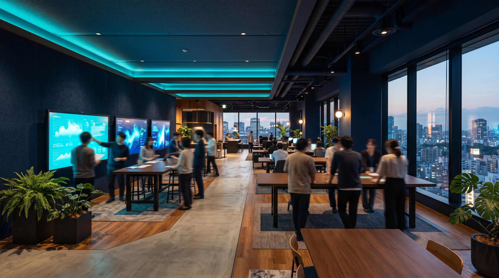

PHASE 01理解する
- 経験すること
- 事業・現場・業務の流れを知る
- できるようになること
- 仕事の全体像を理解し、人に説明できる
- 周囲の関わり方の例
- 伴走する教える・同行する・内容を一緒に確認する
Career
キャリアは、入社した瞬間に決まるものではありません。
経験を重ねながら、得意なことや役割の幅を広げていきます。
01 Start
入社したての人が、実際にどんな仕事をしているのか。最初に経験する場面です。
PALがどの事業をもち、物流の流れのどこを担っているのかを知ります。扱う荷物も現場の形も、顧客ごとに違います。
配属先や関わる現場に入り、作業の流れと人の動きを見ます。資料では分からないことが、現場では一目で分かります。
先輩の現場訪問や打ち合わせに同行し、進め方を見ながら覚えます。分からないことは、その場で聞きます。
先輩と一緒に担当範囲へ入り、まずは一部を自分で進めます。やってみて分からなかったところを、その都度確認します。
すべてをゼロから教える、という進め方はしません。
入社時に、これまで経験してきたことと、これから伸ばしたいことを確認します。そのうえで、足りない領域に時間を使います。FDE・センター長／候補については、物流・SE・データの知識は入社後に習得していく前提で採用しています。

顧客の現場を請け負い、運営します。

大阪本社と東京オフィスがあります。

FDEは倉庫や配送の現場に入ります。

DTSの仕事の場です。配車リーダー・営業所長は担当事業所での勤務です。

衛生清掃の現場は、顧客の施設内です。
※ 働く場所は、職種と配属先によって異なります。勤務地・勤務時間・休日などの条件は募集要項をご覧ください。
02 Growth process
経験を重ねるにつれて、できることと任される範囲が変わります。仕事を通じた成長を、3つの段階で整理しました。
PHASE 01理解する
PHASE 02実践する
PHASE 03改善する
※ ここで紹介しているのは、仕事を通じた成長のイメージです。段階や期間が制度として定められているものではなく、進み方や周囲の関わり方は、職種・配属先・本人の経験によって異なります。
03 Career path
同じ入口から入っても、強みは人によって違います。一つの仕事を深めることも、新しい領域へ広げることもできます。
センター長キャリア
現場を知り、専門性を身につけ、
任される範囲を広げていく。
センター運営の実務を経験しながら、マネジメントや改善の力を身につけます。その先の広がり方は、一通りではありません。
01
センター長候補として、現場運営の実務からスタートします。
人員配置、進捗、品質・安全など、日々の現場を回す基本を身につけます。
02
人・配置・進捗を見ながら、安定した運営をつくる。
作業や導線を見直し、より良い方法へ変える。
現場の状態を、数字でも捉える。
現場の状況を共有し、改善を一緒に進める。
03
↓広がり方の一例は、下のキャリアマップに掲載しています。
現場運営の実務を担いながら、運営・管理を学ぶ
担当拠点の運営を担い、現場が自走する状態をつくる
複数拠点や営業など、役割を広げる道もある
複数拠点や運営領域を俯瞰し、より広い範囲を担う
エンゲージメント・新規営業キャリア仮案（社内確認中）
顧客との接点を重ね、次の提案機会をつくる。
既存顧客への定期的なフォローや、新しい顧客との接点づくりを通じて、課題やニーズを捉え、商談や提案の機会につなげていきます。
※ この職種のキャリアパスは社内確認中です。以下は方向性の仮案で、正式な内容が確認でき次第差し替えます。募集条件はエンゲージメント・新規営業の募集要項をご覧ください。
01
既存顧客への定期的な連絡や、新しい顧客との接点づくりから始まります。
02
いま業務で起きている困りごとを、会話の中で聞く。
これから検討していることを、早い段階で把握する。
どこに手間や負担がかかっているかを整理する。
新しくやりたいこと、変えたいことを聞き取る。
03
顧客の課題を整理し、必要に応じてFDE・BPO・システム／プロダクト・DTS・BizDevなど社内のメンバーと連携しながら、提案機会につなげます。
04
提案して終わりではなく、その後の状況を確認しながら、次の相談につながる接点を保ちます。
※ 具体的な役職区分とステップは確認中のため、他職種のような STEP 表記は掲載していません。
クレンリネスキャリア
清掃の現場から、計画・運営へ仕事を広げる。
食品プロセスセンターなどの清掃現場を経験しながら、衛生状態の確認、清掃計画、現場運営へと仕事の幅を広げていきます。
※ ここで紹介するのは、実際にクレンリネス課で働く社員のキャリアの一例です。制度として定められたコースではありません。クレンリネスで働く社員を見る
01
食品プロセスセンターなどで、実際の清掃業務や現場の状態を知るところから始まります。
02
汚れ方や、その変化を捉える。
どのくらいの頻度で清掃が必要かを考える。
年間の清掃計画へ落とし込む。
現場と情報を共有し、改善につなげる。
03
↓広がり方の一例は、下のキャリアマップに掲載しています。
食品現場の清掃業務を担当する
清掃状況や進捗を確認し、現場を支える
複数現場の状況を確認し、清掃管理を行う
現場運営に加え、清掃案件の営業にも関わる
※ 役割の広がり方は一例です。担当する現場や経験によって異なります。
FDE（Forward Deployed Engineer）
現場に入り、課題を整理し、
実装までを担えるようになる。
顧客の現場で課題を把握するところから始め、仮説と改善を重ねながら、担当する範囲を広げていきます。その広げ方は、本人の志向によって変わります。
01
顧客の現場に入り、課題を把握するところから始めます。
先輩と一緒に仮説を立て、改善を試すところまでを経験します。
02
帳票に出ていない運用まで含めて、現場を見る。
何が原因かを、現場とデータの両方で確かめる。
技術で解くか運用で変えるかを決めて、形にする。
使われる状態まで見届ける。
03
↓広がり方の一例は、下のキャリアマップに掲載しています。
現場で起きていることを知り、システム・データ・運用とのつながりを学ぶ
現場やシステムの状況を捉え、自ら改善方法を考え、実装につなげる
複数案件やより広い領域に関わり、現場と技術をつなぐ範囲を広げる
BRANCHここから先の広がり方は、一つではありません。
担当する案件や領域を広げ、STEP 4 へ。
DXプロダクト開発本部など、プロダクト開発側へ進む道もあります。
複数の案件やメンバーを見ながら、FDEの仕事をより広い範囲で担う
プロダクト企画・開発
現場を見ながらつくり、
プロダクト全体を見る役割へ。
現場起点で機能を企画・実装しながら、設計や技術選定を担い、プロダクト全体を見る役割へ進んでいきます。
01
自社プロダクトの機能を、現場起点で企画・実装します。
React／TypeScriptでのWeb開発経験が前提の職種です。
02
現場で使われる画面を、自分の手でつくる。
要望の裏にある場面まで戻して考える。
続けられる形を選び、設計に落とす。
使われ方を見て、より良い方法へ更新する。
03
↓広がり方の一例は、下のキャリアマップに掲載しています。
現場起点で機能を企画・実装
設計・技術選定を主導
プロダクト全体の方針を決める
技術と組織の両面を見る
DTS（運送）キャリア
配送の現場を知ることから、運行を支え、顧客へ広げる。
まずはドライバーとして、配送の現場を知るところから始まります。その先の広がり方は、本人の適性や経験によって変わります。
01
ドライバーとして配送業務を担います。
配送の流れ、顧客との接点、時間・安全・品質。現場で起きていることを、自分の目で理解していきます。
02
人と車両を見ながら、当日の運行を組み立てる。
迷ったときに、安全を最優先で判断する。
実績と運行データから、次の手を考える。
うまくいったやり方を、現場の手順にする。
03
↓広がり方の一例は、下のキャリアマップに掲載しています。
配送の現場を経験し、安全・品質・時間を守る仕事の基本を知る
BRANCHドライバー経験の先は、上下ではなく2つの方向へ広がります。
A ｜ 運行を支える道
配送全体を見ながら、安定した運行を支える。配車や運行管理の業務にも関わる
拠点全体を見ながら、配送・人・運営をまとめる
さらにその先は、より広い運営・管理へ。
B ｜ 顧客へ広げる道
配送現場で得た経験を活かし、顧客の輸送課題や要望を整理し、提案につなげる
どちらを選ぶかは、本人の適性や経験によって変わります。
※ 掲載している「任される役割の広がり」はキャリアの一例です。進み方は職種・配属先・本人の経験によって異なり、全員が同じ順序で進むわけではありません。昇格や異動が約束されるものではありません。
Career Development
PALでは、それぞれの職種で専門性を磨きながら、担当する仕事や役割の幅を広げていきます。異なる専門性を持つメンバーとの連携も、新しい視点や知識に触れる機会になります。
現場運営、システム開発、FDE、営業など、それぞれの職種で経験を積み、専門性を高めていきます。
経験を重ねながら、担当する案件や改善活動、マネジメントなど、役割の幅を広げていきます。
異なる専門性を持つメンバーと協力しながら、自分の仕事に新しい視点を取り入れていきます。
※ キャリアの広がり方は、職種・経験・適性・配属先によって異なります。特定の昇格や職種変更を保証するものではありません。
どんな人が働いているのか？
現場運営、衛生清掃、輸送、FDE、システム、営業、コーポレート。それぞれの仕事や考え方を、社員の言葉で紹介しています。
※ 社員インタビューは、内容を準備中です。掲載中の回答は、公開前の下書きです。
このページの内容を確認した日：2026年10月9日